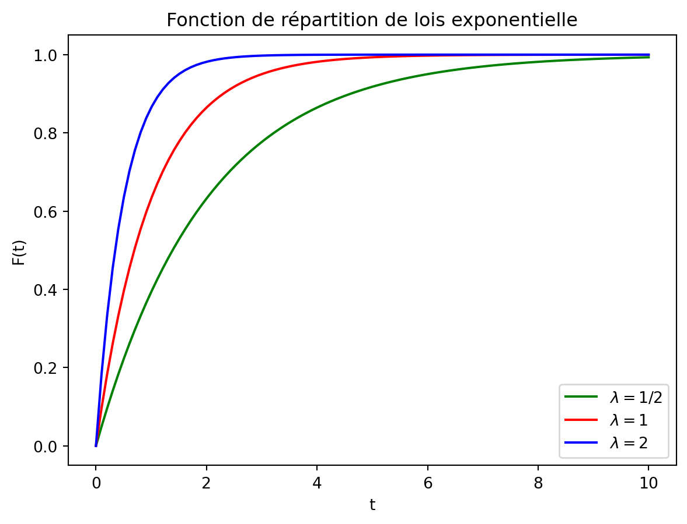
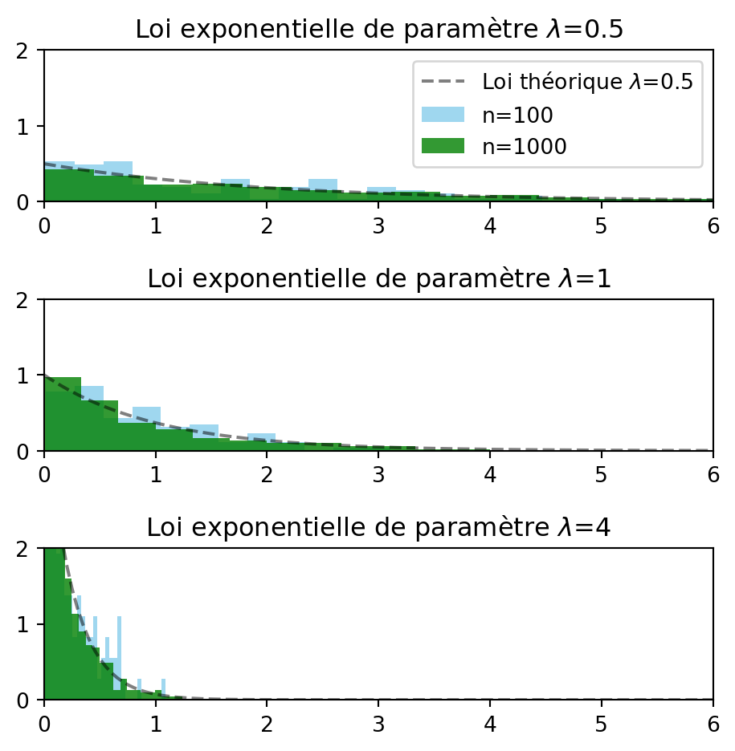
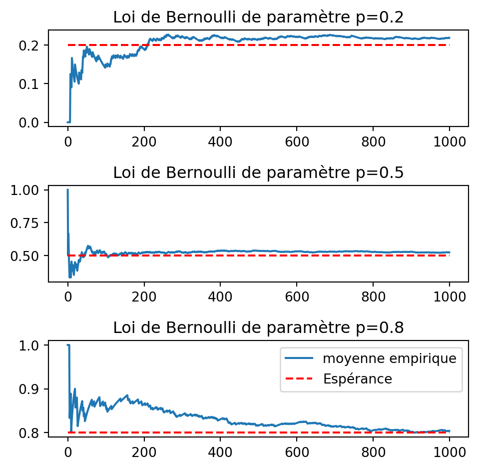
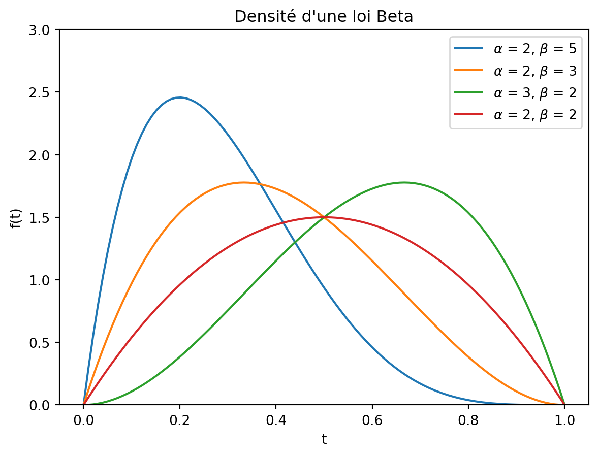
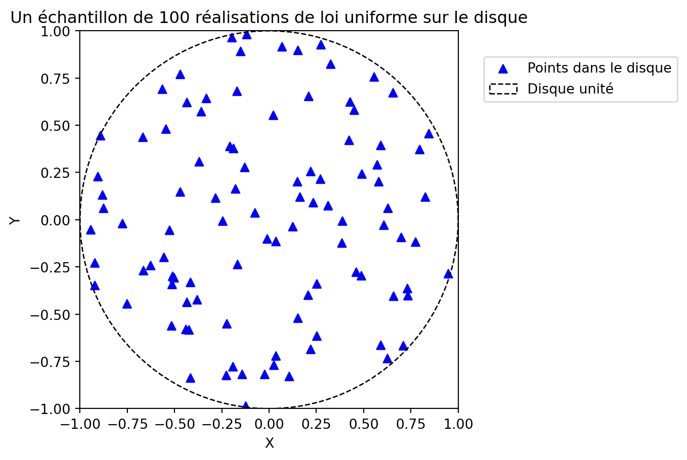

TP3: Simulation de variables aléatoires
- Utiliser les générateurs aléatoires en Python et
numpypour générer des échantillons de lois non triviales. - Bien penser à utiliser le générateur aléatoire pour reproduire les résultats. Une fois le générateur défini, par exemple avec
rng = np.random.default_rng(44), on pourra utiliserrngpour générer des variables aléatoires, et si besoin le transmettre en argument des fonctions utilisant de l’aléatoire.
Méthode d’inversion : loi exponentielle et loi de Cauchy
- Représenter graphiquement la fonction de répartition d’une loi exponentielle (on pourra se restreindre aux réels positifs).
Solution
import numpy as np
import matplotlib.pyplot as plt
rng = np.random.default_rng(44)
t = np.linspace(0, 10, 100)
fig, ax = plt.subplots()
ax.plot(t, 1 - np.exp(-(1/2)*t), color="green", label="lambda = 1/2")
ax.plot(t, 1 - np.exp(-t), color="red", label="lambda = 1")
ax.plot(t, 1 - np.exp(-2*t), color="blue", label="lambda = 2")
plt.xlabel("t")
plt.ylabel("F(t)")
plt.title("Fonction de répartition de lois exponentielle")
plt.legend()
plt.show()
- Écrire une fonction
expoqui prend en argument un entier n, un paramètre \lambda > 0, et un générateur aléatoire (e.g.,rng) et qui donne en sortie un échantillon de taille n de loi \mathcal{E}(\lambda). On utilisera la méthode d’inversion vue en cours.
Solution
def expo(n, lam, rng):
"""
Generates random samples from an exponential distribution.
Parameters:
n (int): Number of samples to generate.
lam (float): Rate parameter lambda of the exponential distribution.
Returns:
numpy.ndarray: Random samples from the exponential distribution.
"""
return -np.log(rng.uniform(size=n)) / lam- Représenter graphiquement l’histogramme d’un tel échantillon pour n=10^2, n=10^3, et pour \lambda = 1/2, 1, 4. Superposer à chaque fois le graphe de la densité de \mathcal{E}(\lambda).
Solution
from scipy import stats
# Define parameters
t = np.linspace(0, 10, 200)
lambs = [1 / 2, 1, 4]
ns = [10**2, 10**3]
colors = ["skyblue", "green"]
# Plot histogram
fig, ax = plt.subplots(3, 1, figsize=(5, 5))
for i, lam in enumerate(lambs):
ax[i].plot(
t,
stats.expon.pdf(t, loc=0, scale=1 / lam),
"--",
color="k",
label=f"Loi théorique $\lambda$={lam}",
alpha=0.5,
)
for j, n in enumerate(ns):
# Generate exponential random variables
va_expo = expo(n, lam, rng)
ax[i].hist(
va_expo, bins=30, density=True,
color=colors[j],
alpha=0.8, label=f"n={n}"
)
# Generate exponential random variables
ax[i].set_title(f"Loi exponentielle de paramètre $\lambda$={lam}")
ax[i].set_ylim(0, 2)
ax[i].set_xlim(0, 6)
ax[0].legend(loc="upper right")
plt.tight_layout()
plt.show()
les conventions pour le paramètre de la loi exponentielle ne sont pas les même que dans votre cours dans scipy.stats…
- Illustrer graphiquement la loi des grands nombres avec \lambda = 1/2, 1, 4. On tracera en particulier la droite d’équation y=\mathbb E[X], où X \sim \mathcal{E}(\lambda).
Solution
# Define parameters
t = np.linspace(0, 10, 200)
lambs = [1 / 2, 1, 4]
n = 10 **3
# Calcul de la moyenne empirique
X_av = np.zeros((len(lambs), n))
for i, lam in enumerate(lambs):
va_expo = expo(n, lam, rng)
X_av[i] = np.cumsum(va_expo)/np.arange(1, n+1)
fig, ax = plt.subplots(3, 1, figsize=(5, 5))
for i, lam in enumerate(lambs):
ax[i].plot(X_av[i], label=f"moyenne empirique")
ax[i].plot([0, n], [1/lam, 1/lam], 'r--', label="Espérance")
ax[i].set_title(f"Loi exponentielle de paramètre $\lambda$={lam}")
ax[2].legend(loc="lower right")
plt.tight_layout()
- Même exercice avec la loi de Cauchy. Que remarque-t-on à la question 4 ?
Lois discrètes
Loi de Bernoulli
- Écrire une fonction
bernouqui prend en argument un entier n et un paramètre p \in ]0,1[ et un générateur aléatoire (e.g.,rng), et qui donne en sortie un échantillon de taille n de loi \mathcal{B}(p).
Solution
Echantillon de taille n=10 de loi Bernoulli(p=0.5) :
[0 0 0 1 0 1 0 0 0 0]- Illustrer graphiquement la loi des grands nombres pour un échantillon de taille n=10^3 et différentes valeurs de p.
Solution
# Define parameters
ps = [0.2, 0.5, 0.8]
n = 10 **3
# Calcul de la moyenne empirique
X_av = np.zeros((len(ps), n))
for i, p in enumerate(ps):
va_bernou = bernou(n, p, rng)
X_av[i] = np.cumsum(va_bernou)/np.arange(1, n+1)
fig, ax = plt.subplots(3, 1, figsize=(5, 5))
for i, p in enumerate(ps):
ax[i].plot(X_av[i], label=f"moyenne empirique")
ax[i].plot([0, n], [p, p], 'r--', label="Espérance")
ax[i].set_title(f"Loi de Bernoulli de paramètre p={p}")
ax[2].legend(loc="upper right")
plt.tight_layout()
Loi géométrique
Rappeler les deux méthodes vues en TD pour simuler une loi géométrique.
Écrire une fonction
geo_bernouqui prend en argument un entier n, un réal p \in ]0,1[, un générateur aléatoire (e.g.,rng) et qui renvoie en sortie un échantillon de taille n de loi \mathcal{G}(p) en se basant sur la fonctionbernou.
Solution
def geo_bernou(n, p, rng):
"""
Generates random samples from a geometric distribution based on Bernoulli trials.
Parameters:
n (int): Number of samples to generate.
p (float): Probability of success for each Bernoulli trial.
rng (numpy.random.Generator): Random number generator.
Returns:
numpy.ndarray: Random samples from the geometric distribution.
"""
geo = np.zeros(n)
for j in range(n):
i = 1
while bernou(1, p, rng)[0] == 0: # Simulate until a Bernoulli trial yields 1
i += 1
geo[j] = i
return geo# Example usage
n = 10
p = 0.3
geometric_samples = geo_bernou(n, p, rng)
print(geometric_samples)
print(f"Moyenne:{np.mean(geometric_samples)}")[1. 2. 2. 3. 6. 1. 1. 1. 3. 6.]
Moyenne:2.6- Écrire une fonction
geo_expoqui prend en argument un entier n, un paramètre p \in ]0,1[, et un générateur aléatoire (e.g.,rng) et qui renvoie en sortie un échantillon de taille n de loi \mathcal{G}(p) en se basant sur la fonctionexpo.
Solution
[ 4. 1. 1. 1. 2. 13. 1. 6. 1. 7.]
Moyenne:3.7- Le module
timecontient la fonctionprocess_time()qui permet de mesurer le temps écoulé entre deux appels. Le code suivant affiche le temps passé à évaluer
import time
t0 = time.process_time()
""" code chunck to be timed """
t1 = time.process_time()
print("Time elapsed when running code chunk:", t1 - t0)Utiliser cette fonction pour comparer la durée de simulation des deux méthodes.
Solution
import time
t0 = time.process_time()
geometric_samples = geo_bernou(n, p, rng)
t1 = time.process_time()
print("Time elapsed when running code chunk:", t1 - t0)
t0 = time.process_time()
geometric_samples = geo_expo(n, p, rng)
t1 = time.process_time()
print("Time elapsed when running code chunk:", t1 - t0)En pratique, les temps d’exécution peuvent varier suivant la charge d’utilisation de la machine (c’est un phénomène aléatoire). Pour donner une meilleur approximation de temps réel d’exécution, on répète plusieurs fois la mesure et on affiche le temps moyen.
Méthode de rejet et loi Beta
On rappelle que la loi de Beta de paramètres \alpha, \beta > 0, notée \text{Beta}(\alpha, \beta), est donnée par la densité
f_{\alpha, \beta}(x)
= \dfrac{\Gamma(\alpha+\beta)}{\Gamma(\alpha) \Gamma(\beta)} x^{\alpha-1} (1-x)^{\beta-1}\,,
\quad x \in [0,1]\,.
La fonction \Gamma s’obtient sur Python avec scipy.special.gamma.
- Représenter la densité pour différentes valeurs de \alpha et \beta pour visualiser cette loi.
Solution

- À l’aide de la méthode de rejet vue en TD, construire une fonction
loi_betaqui génère n variables aléatoires de loi \text{Beta}(\alpha,\beta). La fonction prendre donc en paramètre, n, \alpha, \beta, et un générateur aléatoire (e.g.,rng).
Solution
def loi_beta(n, alpha, beta, rng):
"""
Generates random samples from a Beta distribution.
Parameters:
n (int): Number of samples to generate.
alpha (float): Shape parameter alpha of the Beta distribution.
beta (float): Shape parameter beta of the Beta distribution.
rng (numpy.random.Generator): Random number generator.
Returns:
numpy.ndarray: Random samples from the Beta distribution.
"""
X = np.zeros(n)
k = 0
while k < n:
U = rng.uniform() # Uniform distribution
Y = rng.uniform() # Uniform distribution
if U <= Y**(alpha - 1) * (1 - Y)**(beta - 1):
X[k] = Y
k += 1
return X# Example usage
n = 12
alpha, beta = 2, 3
beta_samples = loi_beta(n, alpha, beta, rng)
print(beta_samples)[0.58991158 0.34556909 0.75997128 0.28782709 0.32675436 0.27534582
0.30186169 0.43321003 0.49512578 0.1580382 0.09452729 0.33500066]- Illustrer graphiquement votre résultat en représentant l’histogramme pour n=10^3 et différentes valeurs de \alpha, \beta. On superposera à chaque fois la densité adéquate.
Solution
# Define parameters
t = np.linspace(0, 1, 200)
alpha, beta = 2, 3
# Generate exponential random variables
n_values = [10**2, 10**3]
colors = ['skyblue', 'green']
bins = [30, 60]
alpha_betas =[(2, 5), (1, 3), (3, 1), (2, 2)]
fig, axs = plt.subplots(len(n_values), len(alpha_betas), figsize=(8, 4))
for i, n, color, bin in zip(np.arange(2), n_values, colors, bins):
for j, alpha_beta in enumerate(alpha_betas):
alpha, beta = alpha_beta
va_beta = loi_beta(n, alpha, beta, rng)
axs[i, j].plot(t, stats.beta.pdf(t, a=alpha, b=beta),'--', color='k', label="Loi théorique", alpha=0.5)
axs[i, j].hist(va_beta, bins=bin, density=True, color=color, alpha=0.8, label=f'n={n}')
if i == 0:
axs[i, j].set_title(f"Loi Beta de paramètres alpha={alpha}, beta={beta}", fontsize=6)
axs[i, j].legend(fontsize=6)
plt.suptitle(f"Histogramme variables aléatoires Beta(alpha={alpha}, beta={beta})")
plt.tight_layout()
plt.show()Loi sur le disque
- Écrire une fonction
unif_disquebasée sur une méthode de rejet qui génère n variables aléatoires uniformes sur le disque unité à partir de variables aléatoires uniformes indépendantes sur [0,1], et prend comme second argument un générateur aléatoire (e.g.,rng).
Solution
- Utiliser cette fonction pour représenter graphiquement un échantillon de n=100 variables aléatoires uniformes sur le disque.
Solution
# Generate random points
x = unif_disque(100, rng)
fig, ax = plt.subplots()
ax.scatter(
x[:, 0], x[:, 1], marker="^", color='blue', label="Points dans le disque"
)
plt.title("Un échantillon de 100 réalisations de loi uniforme sur le disque")
plt.xlabel("X")
plt.ylabel("Y")
plt.xlim(-1, 1)
plt.ylim(-1, 1)
# Plot a circle
circle = plt.Circle((0, 0), 1, color="black", fill=False, linestyle="--", label="Disque unité")
ax.add_artist(circle)
ax.set_aspect("equal", adjustable="box")
plt.legend(bbox_to_anchor=(1.05, 0.95), fancybox=True)
plt.show()
- Écrire une fonction
unif_disque2, basée sur la fonction précédente, qui donne en sortie à la fois les points dans le disque mais également, dans une matrice séparée, les points rejetés (et dont les entrées sont similaires à celle deunif_disque). Représenter graphiquement un échantillon en utilisant une couleur pour les points acceptés (dans le disque) et une autre pour les points rejetés (à l’extérieur).
Solution
def unif_disque2(n, rng):
"""
Generates random samples uniformly distributed within a unit disk.
Parameters:
n (int): Number of samples to generate.
rng (numpy.random.Generator): Random number generator.
Returns:
tuple: A tuple containing two numpy arrays:
- The first array contains the accepted samples within the unit disk.
- The second array contains the rejected samples.
"""
X = np.zeros((n, 2)) # Matrix to hold the accepted samples
rejet = np.zeros((0, 2)) # Matrix to hold the rejected samples
k = 0
while k < n:
U = 2 * rng.uniform() - 1 # Uniform distribution on [-1, 1]
V = 2 * rng.uniform() - 1 # Uniform distribution on [-1, 1]
if U**2 + V**2 <= 1: # If the point (U, V) falls within the unit disk
X[k, :] = [U, V] # Assign (U, V) to the k-th row of matrix X
k += 1
else:
rejet = np.vstack((rejet, [U, V])) # Add the rejected point to the matrix rejet
return X, rejet# Example usage
x_accepted, x_rejected = unif_disque2(100, rng)
print("Reject ratio :", len(x_rejected) / (len(x_rejected) + len(x_accepted)))Reject ratio : 0.24812030075187969